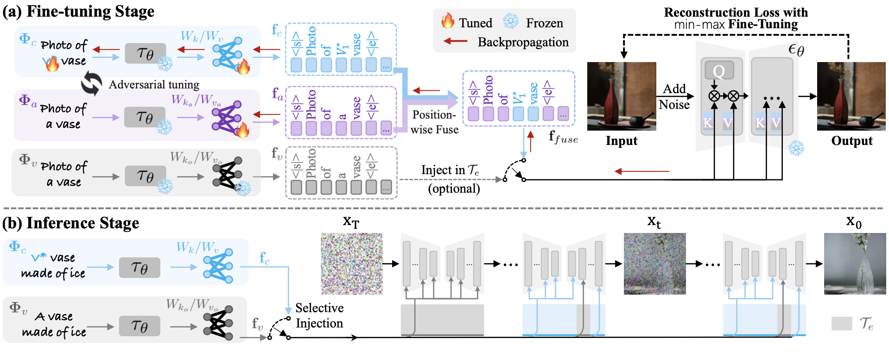

Method
|
we propose Shrinking Injection of Customized Element (SInCE), a novel subtractive framework, to address the inherent fidelity–editability tradeoff in customized generation. The core idea of SInCE is to exploit the temporal and spatial disentanglement between the trigger intervals of different image content. During finetuning, SInCE encapsulates all customized elements into a compact and plug-and-play module, enabling flexible control over the selective injection of customized information at inference. Besides, SInCE can modulate the trigger intervals of customized concept at fine-tuning to better disentangle them from the intervals of contextual content. At inference, SInCE skips injecting customized information at the trigger interval of contextual content to restore its normal expression, while injecting customized information in the remaining intervals is sufficient to trigger concept generation without degrading fidelity. Therefore, SInCE can restore contextual content while preserving high concept fidelity. |
 An overview of the proposed SINCE. In the fine-tuning stage, SINCE encapsulates all customized elements into a compact, plug-and-play module $\Phi_c$. SINCE can also modulate the custom trigger interval $T_c$ by adjusting the injection interval of $f_{fuse}$. At inference, customized information contained in $f_c$ is injected into $\epsilon_\theta$ only outside the contextual trigger interval $T_e$. |
Comparisons

Visual comparison with optimization-based method. Each generation case contains one or more types of contextual content. Our method shows clear advantages over the baselines in faithfully adhering to the prompt while preserving the key concept features. For instance, SInCE successfully changes the concept’s material without altering its geometric structure.

Visual comparison with finetuning-free methods. SInCE outperforms baselines in balancing the fidelity–editability trade-off, i.e., achieving strong prompt adherence while preserving key concept features.
BibTeX
@article{jin2026less,
title={Less is More: Shrinking Injection to Reconcile Fidelity and Editability in Customized Generation},
author={Jin, Jian and Shangbing, Gao and Fu, Zhenyong and Yang, Jian},
journal={IEEE Transactions on Multimedia},
pages={1--25},
year={2026}
}